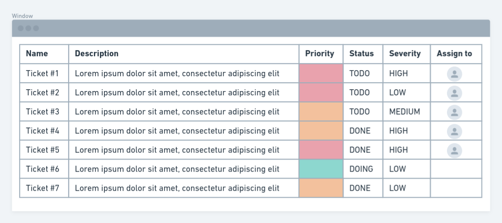
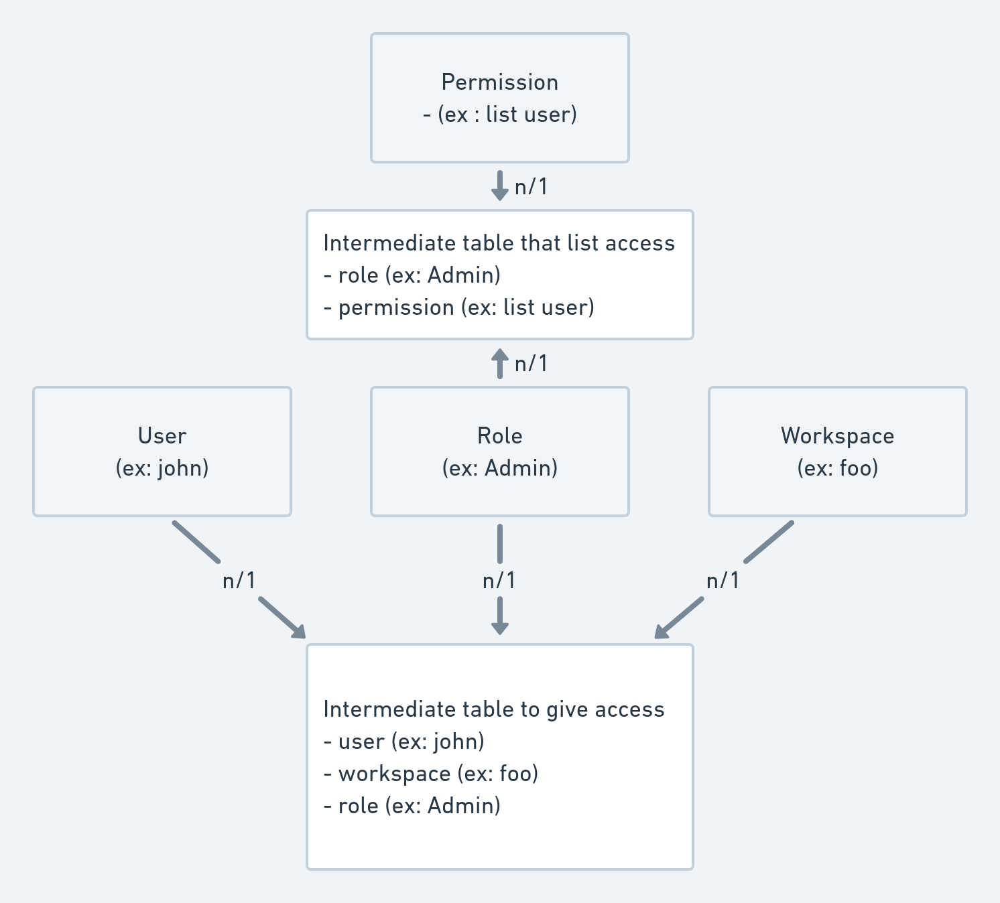

How to add a new content !
Out of the box, boilerplate is a fully functionnable application but you want to add your custom data inside it.
We will take as an exemple a new Ticket model and implement it on frontend and backend.
Exemple with tickets:

Backend part
First you need to create your new app that will be your Ticket app system.
$ docker-compose exec api python manage.py startapp tickets
That will create the following files :
📦api/tickets
┣ 📂migrations //-> dicrectory for your migration file, django take care of that <3
┣ 📜admin.py //-> use for django admin
┣ 📜apps.py //-> basic config file for this app
┣ 📜models.py //-> new model used by your app
┣ 📜tests.py //-> used for unitary test
┗ 📜views.py //-> your viewset / serializer of your app will be here
You only want to adapt your model models.py and your view/serializer views.py.
In munity data are splitted around workspaces and can also be groupable. Munity take care of that.
To manage Tickets in our application we can modify our models to match following :
models.py
from django.db import models
from munity.models import MunityModel, MunityGroupableModel
from munity.users.models import User
from django.db.models.deletion import SET_NULL
# Below we say two things :
# - Ticket are a Munity model, that's mean it is related to workspaces, it is timesteamped, and has an UUIDv4 for id.
# - Ticket are a Munity groupable model, that's mean they can be grouped
class Ticket(MunityModel), MunityGroupableModel:
class TicketStatus(models.TextChoices):
TODO = 'TODO', 'TODO'
DOING = 'DOING', 'DOING'
DONE = 'DONE', 'DONE'
class TicketSeverity(models.TextChoices):
HIGH = 'H', 'Hight'
MEDIUM = 'M', 'Medium'
LOW = 'L', 'Low'
class TicketPriority(models.TextChoices):
IMPORTANT = "red", 'Important'
NORMAL = "orange", 'Normal'
TRIVIAL = "green", 'Trivial'
name = models.CharField(max_length=256, blank=False, null=False)
description = models.TextField(blank=True, null=True)
# Use a foreign key ot refer user
assign_to = models.ForeignKey(User, related_name='assign_to_users', on_delete=SET_NULL, blank=True, null=True)
status = models.CharField(
choices=TicketStatus.choices,
default=TicketStatus.TODO,
)
severity = models.CharField(
choices=TicketSeverity.choices,
default=TicketSeverity.TODO,
)
priority = models.CharField(
choices=TicketPriority.choices,
default=TicketPriority.TODO,
)
serializer_class = LaboratorySerializer
Then adapt your views.py :
from rest_framework import serializers
from .models import Ticket
from munity.views import MunityWorkspaceViewSet
class TicketSerializer(serializers.ModelSerializer):
class Meta:
fields = '__all__'
model=Ticket
# expend user to get all user information on tickets
assign_to = UserSerializer()
class TicketViewSet(MunityWorkspaceViewSet):
serializer_class = TicketSerializer
Create database table
Thanks to Django this part is crazy easy :
$ docker-compose exec api python manage.py makemigration tickets
$ docker-compose exec api python manage.py migrate
Manage right for new model
By default your users cannot access your new model, you have to add permissions.
Munity provide a CLI to care of that for you. It will give read only access to user and full access to Admin and Owner.
This command will create Permissions :
- list ticket
- update ticket
- create ticket
- delete ticket
- retreive ticket
And give access to list and retrieve to User role and all Permissions to Admin/Owner
$ docker-compose exec api python manage.py initiate_default_authorization
Permissions works as following :
This exemple show how John access workspace foo as an User so it can list users.

Frontend part
On previous part we create and give access to following endpoints :
- GET
https://api.*DOMAIN_NAME*/tickets/to get all tickets - POST
https://api.*DOMAIN_NAME*/tickets/to create new ticket - PATCH
https://api.*DOMAIN_NAME*/tickets/*uuid*/to update specific ticket - DELETE
https://api.*DOMAIN_NAME*/tickets/*uuid*/to delete specific ticket
Munity frontend app provide a tool to link directly these enpoint to a store.
-
Create a new slice, for exemple in
app/tickets/slice.tsx. -
Add following code inside:
import { sliceFactory } from 'munityapps/factory/slice';
export enum TicketStatus{ TODO = "TODO", DOING = "DOING", DONE = "DONE" }
export enum TicketSeverity { HIGH = "H", MEDIUM = "M", LOW = "M" }
export enum TicketPriority { IMPORTANT = "red", NORMAL = "Normal", TRIVIAL = "Trivial" }
export interface Ticket{
id: string,
name: number,
description: string,
status: TicketStatus,
severity: TicketSeverity,
priority: TicketPriority,
created: Date,
updated: Date,
}
export const ticketAPISlice = sliceFactory<Ticket>({
reducerName: 'ticketAPI',
endpoint: '/tickets/',
name: 'Ticket'
});
export const {
useGetTicketsQuery,
useGetTicketQuery,
useDeleteTicketMutation,
useUpdateTicketMutation,
useCreateTicketMutation,
} = ticketAPISlice
3. Add your slice to your store in app/store.ts
import { configureStore } from '@reduxjs/toolkit'
import { munityMiddleware, munityReducer } from 'munityapps/store';
import { ticketAPISlice } from './tickets/slice';
// [...]
// munityReducer[storeKey] = reducer;
munityReducer[ticketAPISlice.reducerPath] = ticketAPISlice.reducer;
// [...]
// munityMiddleware.push(middleware);
munityMiddleware.push(ticketAPISlice.middleware);
// [...]
const store = configureStore({
reducer: munityReducer,
middleware: getDefaultMiddleware =>
getDefaultMiddleware()
.concat(munityMiddleware)
})
export default store;
4. Now you can use your new component anyware in your application :
import './style.scss';
import TicketTable from './list';
import { useGetTicketsQuery, User } from './slice';
const TicketsList = () => {
const { data: tickets, error:errorGettingTickets, isFetching:isFetchingTicket, isLoading:isLoadingTicket} = useGetTicketsQuery();
return <div style={{width: '100%', padding: '120px 64px 64px 64px'}}>
<TicketTable tickets={tickets?.results)} />
</div>
}
export default TicketsList;